Four-Poster Bunkbeds
April, 2017; October/November, 2018
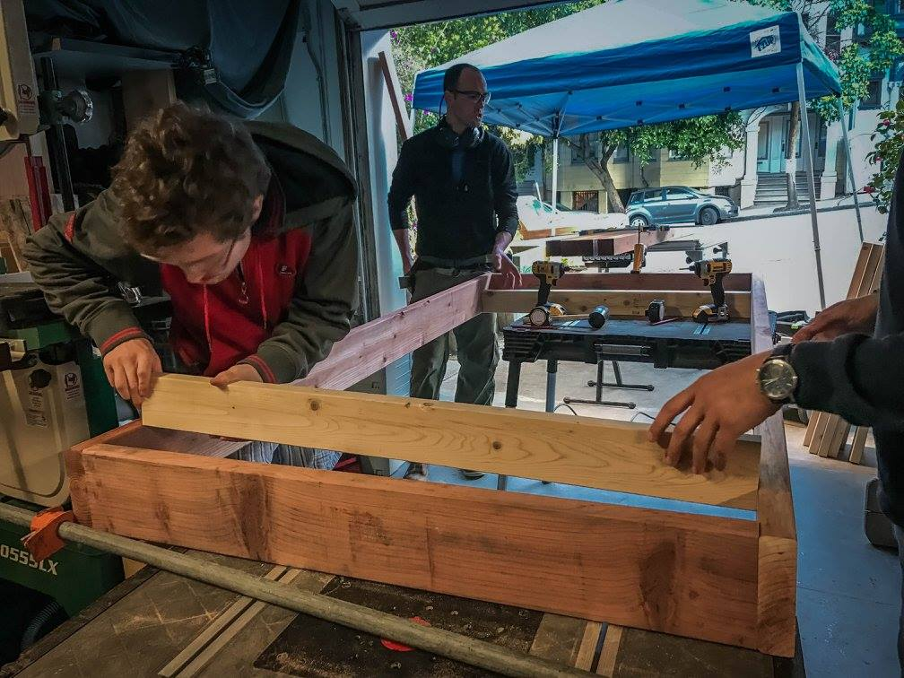My first wood project! Led by the great Steve the Builder (a former housemate of ours now living and working in New Zealand; bald and center in the picture above), we built three bunkbeds for two different rooms in our lovely home. Two of them were full-size, and one was a twin. I slept in one of them for about a year, and have now moved into a different one.
Now (in late 2018), Steve is gone and we need to make four more full-size bunks (to sleep 8 people). Having worked with him on these last year, I took point on bunkbeds round 2. The project can be broken down into three main steps:
- Design/material acquisition/prep
- Platform/leg building
- Final assembly
Design
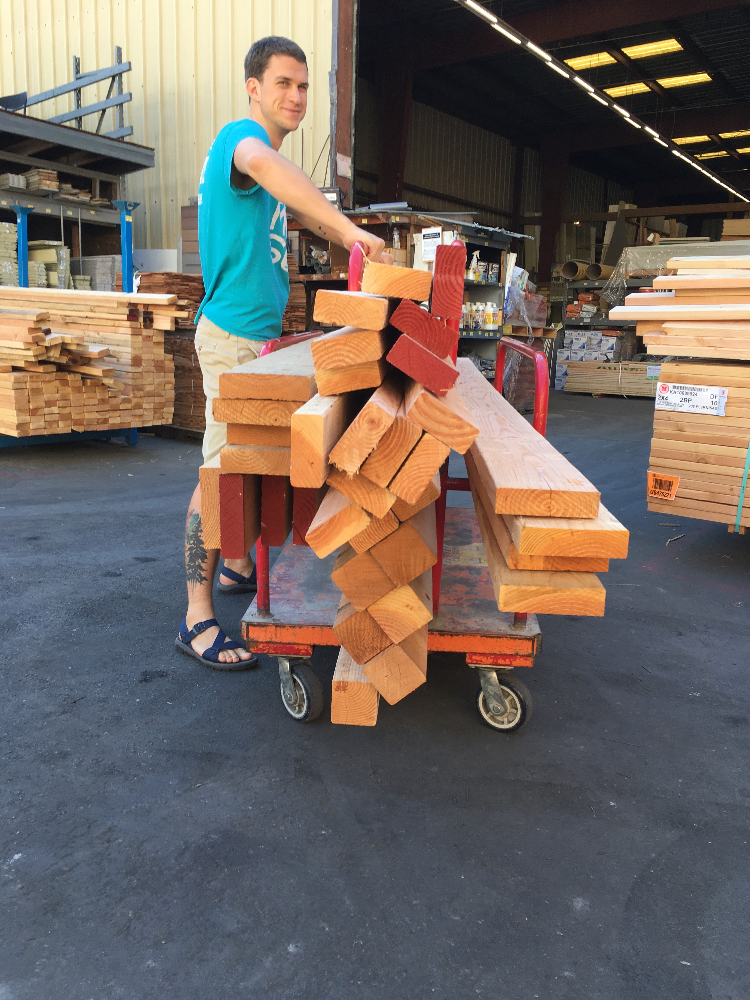While very sturdy, the design of these bunks is fairly simple. When we made them in 2017, we had nice CAD designs courtesy of our resident Civil Engineer, Mary. Unfortunately, we couldn't get our hands on those this time around. We could, however, just measure the beds from last time and draw up a new design from there.
(Tracking down picture of design schematics!)
You need three different types of wood for each bed: 4x4 posts for each of the legs, 2x6 planks for the sides of each sleeping platform, and 2x4s to serve as supporting cross-beams for the sleeping platforms. Using 2x4s creates a lip that the mattress can sit snugly within, so there's no risk of it slipping off in the middle of the night. (See pictures below.) I would recommend Douglass Fir, since it's very sturdy, high-quality, and inexpensive.
It's worth mentioning as well that most wood is sold in 8 foot (96 inch), 10 foot (120 inch) and 12 foot (144 inch) varieties. Depending on if you're making twin- or full-size beds, you can save a bit of money by minimizing the amount of unusable leftover from the wood you buy. More on that below. For a full-size bunkbed, you need to buy:
- Eight pieces of 2x6 plywood (2 that are 10 feet long, 4 that are 8 feet long).
- Twelve pieces of 2x4 plywood (6 that are each 10 feet).
- Four pieces of 4x4 posts (8 feet long).
At Discount Builder Supply in SF, all that should cost less than $150. A large box of high-quality framing screws (essential) will cost another ~$45. Eight 5-inch long, 1/2-inch thick bolts, with matching washers and nuts for each (optional), will run another $20. Grab an extra few 10-foot 2x4s for cross-beams.
Making your cuts
Once you haul all that wood home, the next step is to cut it all to size so that it can be assembled. Assuming that there's a good saw on hand, this is a fairly quick step. I'm using the dimensions we decided upon below (again, for a full-size bunk) but most can be varied depending on the desired size of the bed or constraints of the room it will be housed in.
- Starting with the 2x6 plywood, cut the four 8-foot planks down to 82.5 inches.
- Next, using the 10-foot 2x6 planks, make two 55-inch cuts from each. You should end with four 82.5-inch planks, two for the long side of each bed platform. There should be a small part (slightly >10 inches) of 8-foot plank each left over.
- Similarly, using the 10-foot 2x4 planks, make two 55-inch cuts from each. You should end with twelve 55-inch planks.
- Last, if the roof of the room you're putting the bed in is less than 8 feet (or if you want to shorten it for some other reason), cut the 4x4 posts to the desired length.
No matter the size of the bed you want to make (twin, full, queen, etc.), the length (head to toe) and height of the bed should be roughly the same. Varying the width will allow you to fit mattresses of different types. For reference, using 39-inch wide cross beams rather than the 55-inch ones just mentioned is perfect for a twin-size bunk.
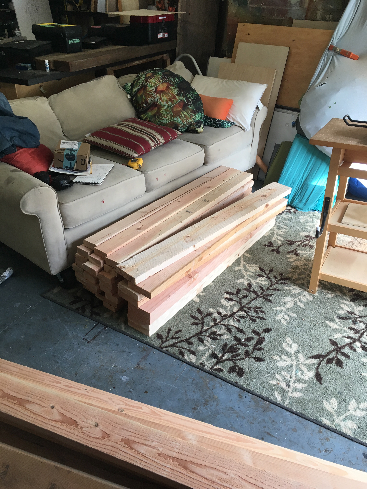Component Assembly
After making all the cuts, the next thing is to assemble the sleeping platforms. Begin by assembling the outer frame of each. Take two 82.5-inch 2x6s and two 55-inch 2x6s. Place the side of the short beams flush against the end of the long beam, so that the 55-inch 2x4s can fit snugly inside. Be sure that the planks fit together at a 90-degree angle (or close). I started with one long beam, attached one short beam to its end (to give an L-shape), then attached the other short beam (now, a fat U-shape), before finally attaching the second long beam. I used 3 screws at each corner, and pre-drilled all the screw holes to make sure they went in straight. Do the same for both platforms.
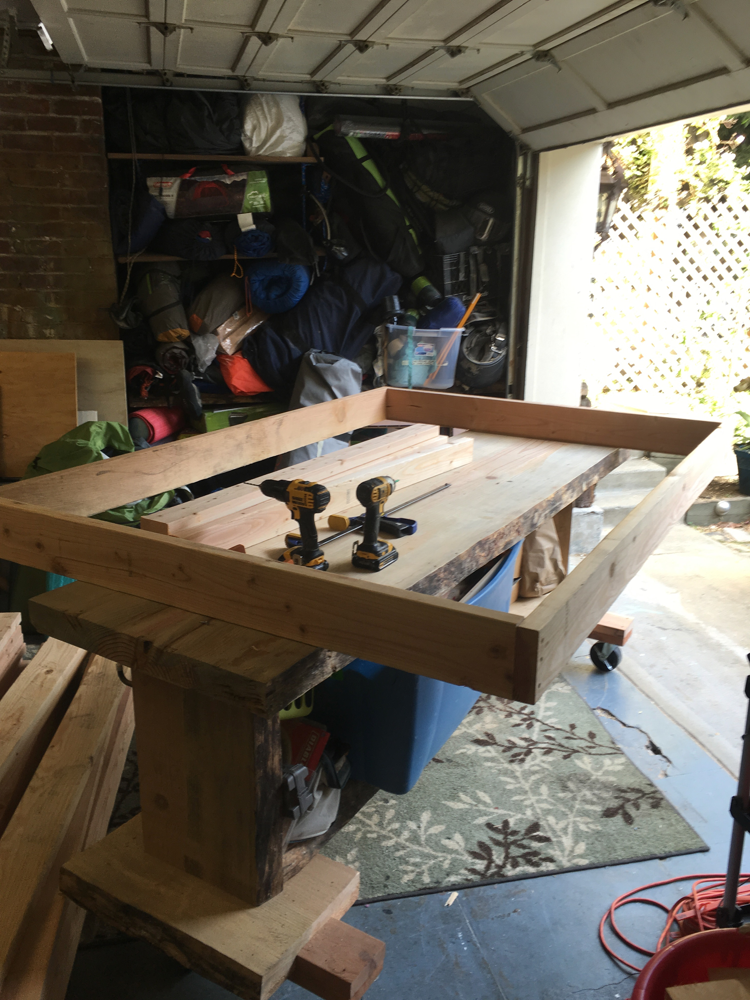Once the frames are together, the next step is to add the supporting 2x4 planks (see picture below). It's not so important that the measurements separating each plank is exactly precise, as long as they are roughly equivalent. As long as the 2x4s have been cut accurately, they should fit snugly within the frame. Clamp them across if not, then pre-drill 2 holes into the end of each 2x4. Fill with screws.
One practical design note is that the 2x4 planks closest to the head/foot of the frame should be closer to the frame than they are to the next closest 2x4 (see image below). This is so that, whichever end a person sleeps at, the part of the mattress below their head is well-supported. 3-4 inches from the frame is a good distance.
It's also important to be sure that the 2x4s are all flush to the bottom of the 2x6 frame. There should be a 2 inch gap between the top of the 2x4 and the lip of the 2x6 frame. As mentioned above, this serves to house the mattress and limit its movement.
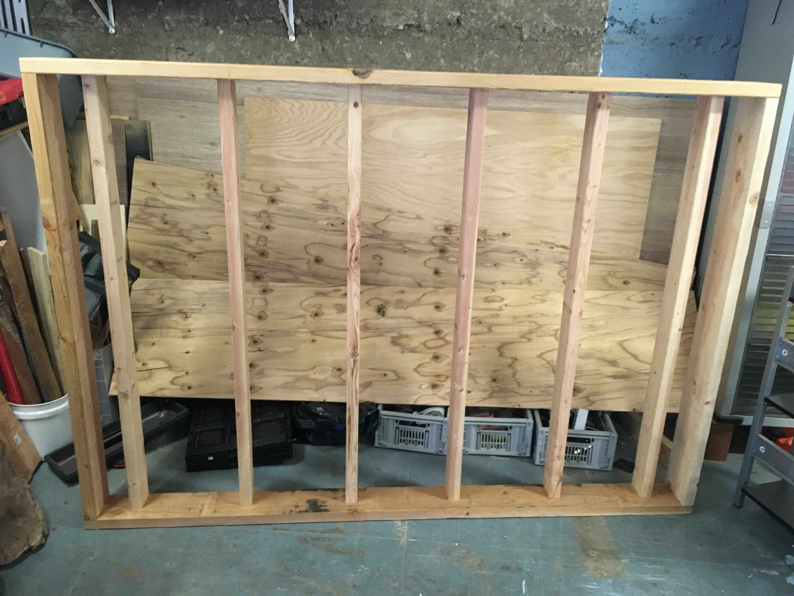Notch cutting
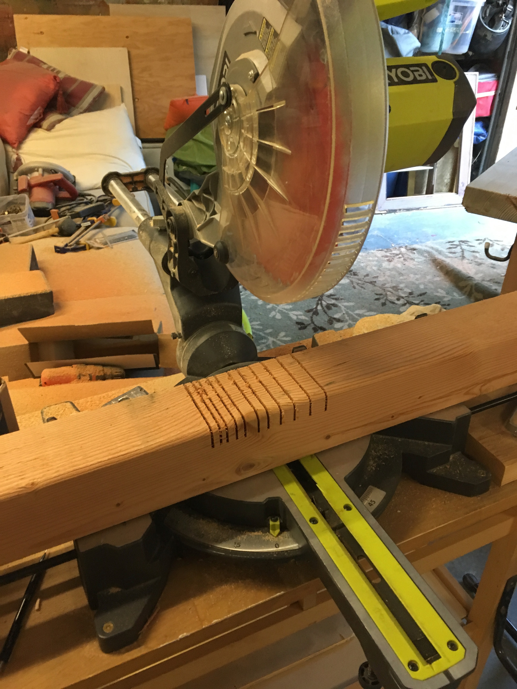A really important structural feature of this design is that the platforms all sit inside notches that are cut into the four posts. This makes them much sturdier. The platforms are heavy enough that screws, even bolts, would be too weak to hold them up at a 90 degree angle to the posts. They would risk bending or breaking, and sending the platform crashing down. Not good if someone is asleep under you.
The post notches help us avoid that potentially unhappy outcome. Unfortunately, they're a bit tricky to make. There are lots of methods to cut them, but mine is as follows:
- Trace out the exact shape of the two notches on each post. They should each be 1.5 inches deep, so as to precisely house the 2x6 planks of the frame. (2x6 planks actually measure 1.5x5.5 inches; 2x4s are 1.5x3.5. False marketing, I know.) How high the notches sit on the post is a matter of preference. Ours we cut 15 inches from the ground (to allow for storage space underneath) and then 40 inches from the top of the first notch, to allow the bottom bunk ample head-room. Practically, this means that (if you're measuring from one end), there is a notch cut from 15 to 20.5 inches, then another from 60.5 to 66 inches. Again, both notches should be 1.5 inches deep.
- Using a table saw, make a series of cuts through the 4x4 within the markings. The closer the cuts are together, the easier the rest of the process will be. This can also be done with a jigsaw (or, if you're feeling really industrious, with a hand saw). If using a circular saw, be careful to align the bottom of the saw with the edge of the post, so that you cut all the way through to 1.5 inches deep. Because circles, you will need to cut the notches from both sides of the post as well. Otherwise, one edge would be shallower than the other.
- Once all of the notches have these thin cuts in them, the remaining strips of wood inside each notch should break off fairly easily. This can be done quickly with a chisel, or possibly with a flathead screwdriver.
- The last step is to sand the bottoms of the notches and be sure that a 2x6 plank will fit completely inside them. Depending on how cleanly the strips broke, the sanding process may be very quick or very tedious. I would highly recommend making as many small cuts as possible so that you don't have to spend hours sanding the notches flat.
I unfortunately don't have a great close-up of a finished notch, but the picture below gives some sense of the ideal outcome.
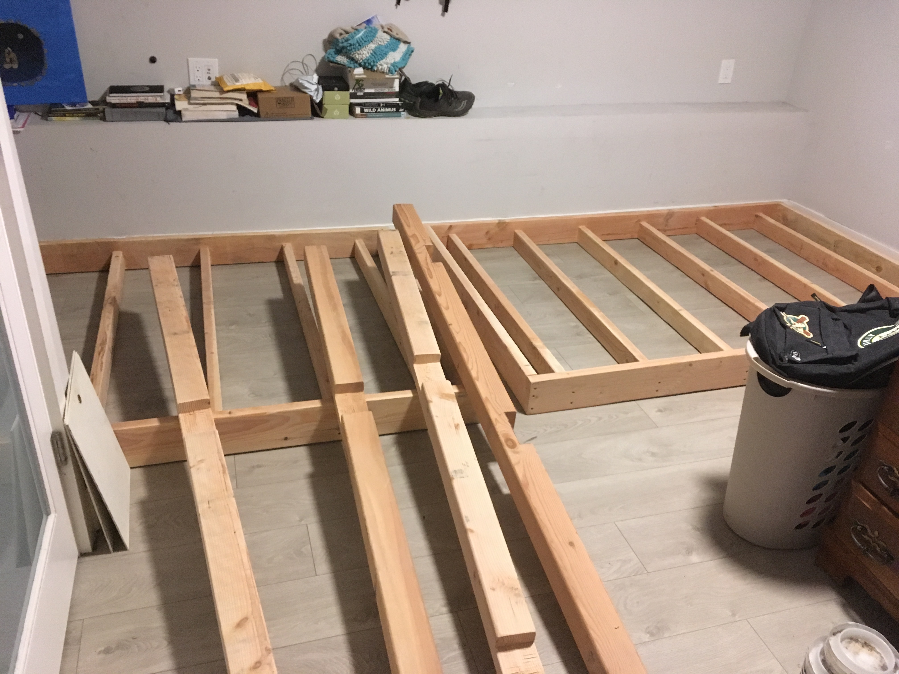Sanding
Since people will be sleeping in these, it's important to spend some quality time going over both the platforms and posts with a sander in order to get all the sharp edges out. There will be several, especially on the ends where pieces were cut, and next to the screws. The last thing that you want when you wake up in the middle of the night is to catch a splinter on your way to the bathroom.
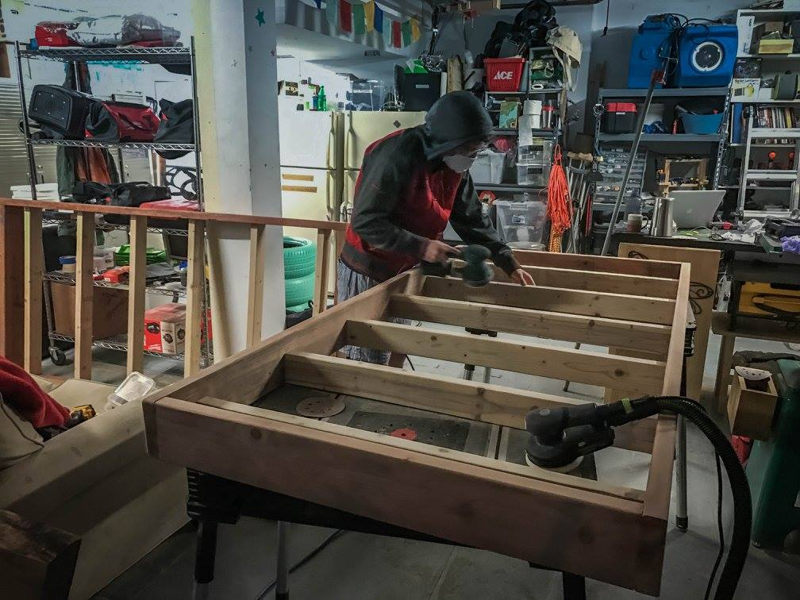Final assembly
The pictoral evidence is lacking here, as well, but the final step is to lift the platforms into the posts and bolt them into place. Because the bed is large and quite heavy, this is best done in the room that will be the bed's final resting place (heh). It also helps to have many sets of hands.
After several attempts, we found that the best way to do this is:
- First, stand two of the posts for the long side upright, and lift the bottom platform into its notches. Lifting the platform generally takes two people, with another two to hold the posts upright.
- Bring the other two posts (two more people for this) and slide the bottom frame into its notches. You should now have the bottom frame sitting in all four posts as if it was a freestanding bed.
- Put two temporary screws into the notches holding the bed on one long side. This will keep them standing upright without people holding onto them.
- With one person holding the bottom platform upright, two people pull the two posts from the other long side.
- With the posts removed, two people lift up the top platform and guide it into the notches on the screwed-in side. They will continue to hold it upright and parallel with the ground briefly.
- The two people who have removed the posts return them to their rightful positions, aligning their notches with the two platforms. With some wiggling, the platforms should now guided into the notches. If the fit is snug, you may need to use a mallet to tap them into place.
- Put temporary screws through all the notches into the frame (8 notches total, 2-3 screws per notch). The whole structure should now be able to stand on its own!
This is the majority of the work! The last few steps - adding bolts to secure the platforms into the notches, and adding cross-beams to support the corners - are all optional. We did them because they make the design sturdier, and we hope for these to last a while.
To add bolts, you need a drill bit of similar size. We used 1/2-inch bits and bolts. Drill through the post and the frame's 2x6 piece until you reach through to the inside of the frame. Then, put the bolt through, add a washer on the inside, and tighten it down with a nut. Repeat for all 8 notches.
The cross-beams are fairly simple cuts. You shoud use 8 total, 2 for each corner attached just beneath the top bunk. Select 2x4 pieces that are about 15-20 inches long, and make a 45-degree cut on either end. When installing, align them with the 2x6 of the top bunk's platform and the inside of the 4x4 post. Put 1 or 2 screws in each, at an angle for added support. Once these are installed, the bed should shake/wiggle very little.
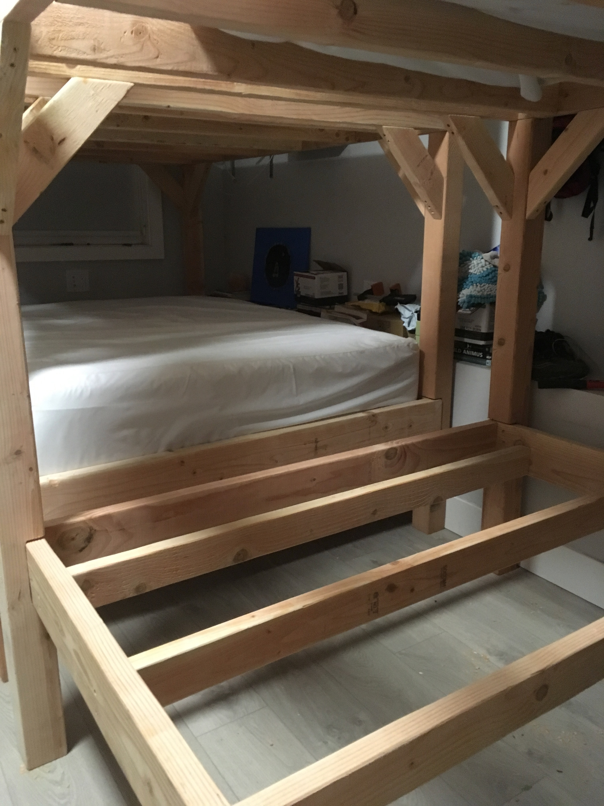 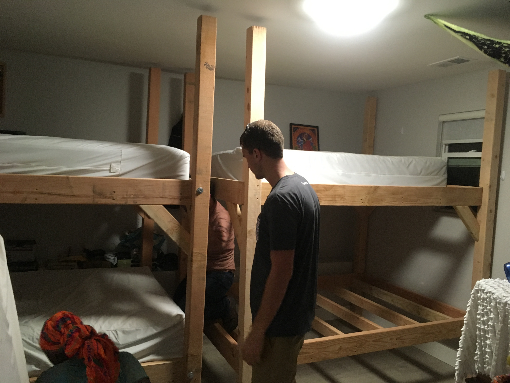Now, all that's left to do is add a ladder (simple project for another day), mattress, decorate, and celebrate!
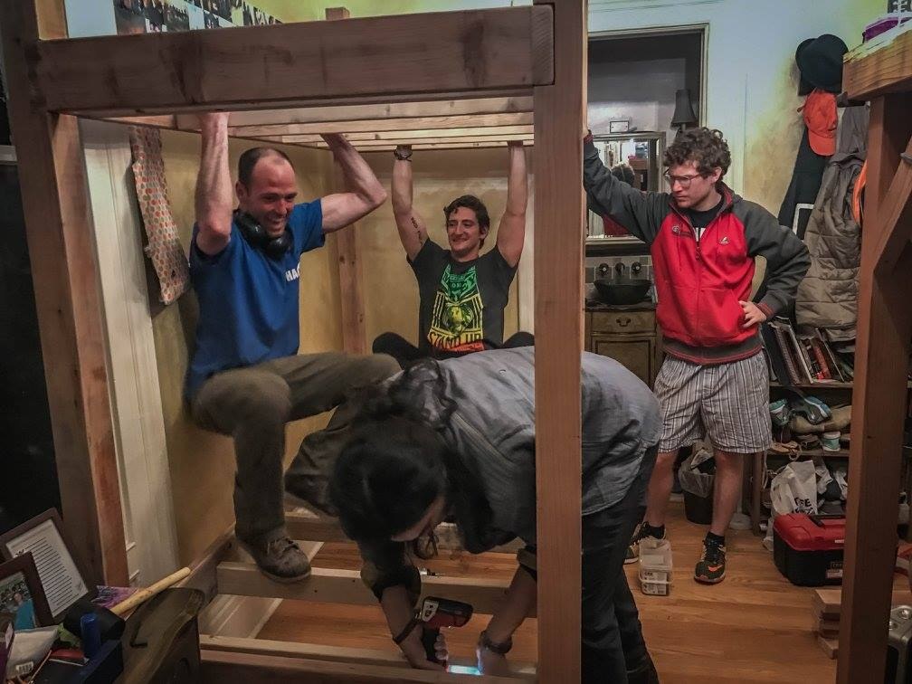IKEA, no. Wood, yes.